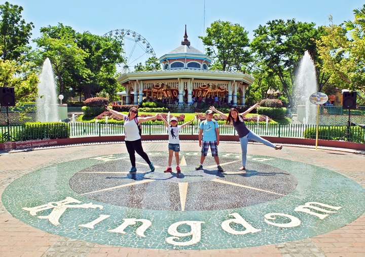
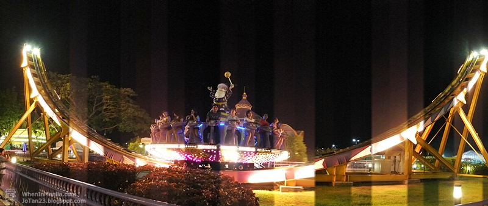
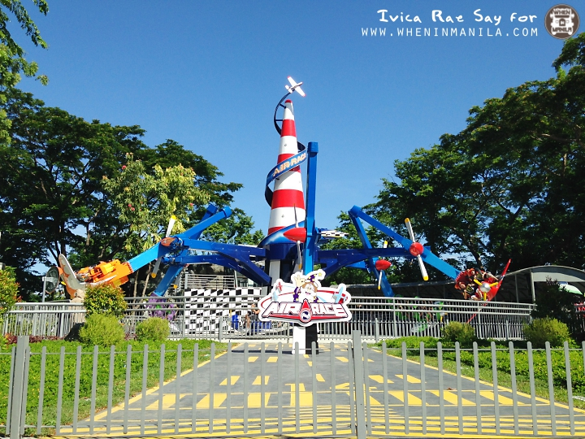
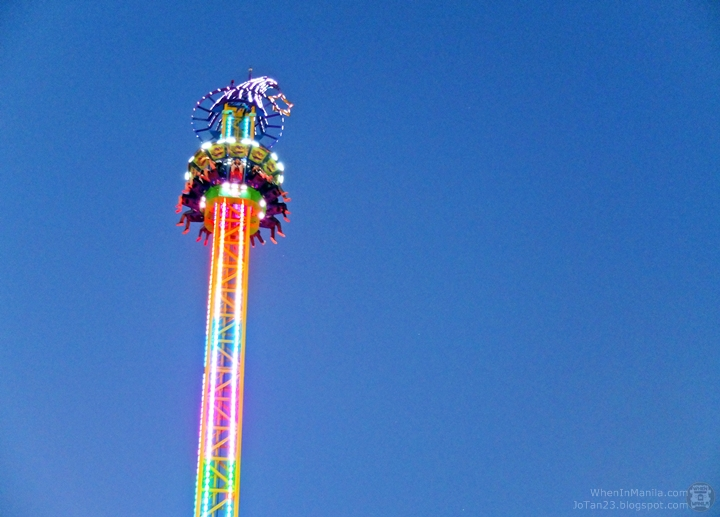
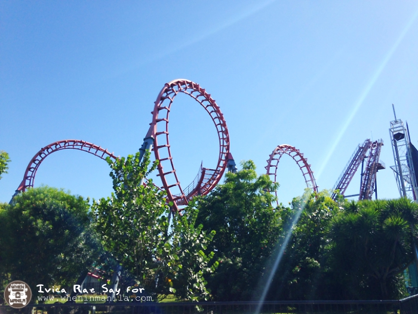

When In Manila, way back October 1995. Enchanted Kingdom opened its doors to the public. I still remember the excitement I felt when I first stepped in the park grounds. I was with my cousins then, the feeling I felt was just pure bliss. It was incomparable, my heart was filled with happiness in an instant.
Through the years, Enchanted Kingdom remains to be the only world class theme park here in the Philippines, nothing even comes close. They have continuously improved in terms of rides and attractions that keeps people coming back for more.
The newest attraction i've seen the last time I went to Enchanted Kingdom was the 4D, which now I believe is the 7D. For those who haven't visited EK recently, sharing to you the 6 new attractions you should see when you visit Enchanted Kingdom again.
1. Disk O Magic

Fun and breathtaking-2 words to describe this ride that will keep you spinning literally and figuratively. I wouldn't pick this as the best ride, but yes! I would probably ride this again the next time I go back to EK!
2. Air Race

Another fun ride that I would suggest to try is the Air Race. It can rotate either 180 or 360 degrees, simulating acrobatic exhibition flights. And the best part of the ride is when you are left hanging upside down!
3. Extreme Tower Ride

If your are afraid of heights, I do not suggest for you to try this ride. The thrill you seek, you will get it here! While enjoying the view of the whole park while the ride ascends... then suddenly drops 76kph 40 meters from the ground! EKstreme Tower ride will leave your heart up in the air and your lungs screaming for more!
6. Space Shuttle

Who'd skip riding this extreme ride? Scream and shout at Space Shuttle!
I would still say that I still enjoy every moment spent at Enchanted Kingdom. that feeling of magic that Enchanted Kingdom gave me when I was a kid. When In Manila, share that magic to your loved ones, feel that happy feelings, visit Enchanted Kingdom and see for yourself!